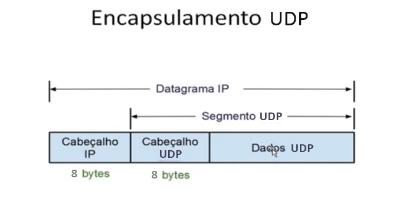
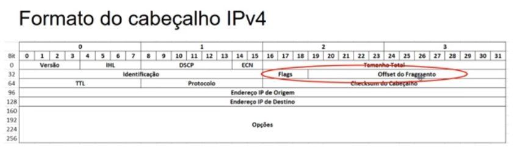

Um switch é um equipamento de rede que permite interconectar dispositivos em uma rede de computadores, usando comutação de pacotes para receber, processar e encaminhar quadros ao dispositivo de destino.
Vamos entender o que eles fazem:
A função principal do switch é conectar os dispositivos que estão dentro de uma rede, não confunda com a funcionalidade do roteador (que conecta redes distintas entre si).
O switch é um equipamento concentrador, que encaminha os pacotes para o dispositivo ou grupo de dispositivos de destino, em vez de simplesmente encaminhar os pacotes para todos os nós da rede, como ocorria com os hubs. Aprende os endereços físicos dos nós e os associa às suas portas para uso posterior. Encaminha os quadros para seus destinos usando técnicas como Store and Forward, Cut-through, Fragment Free e Adaptive Switching.
O swiitch cria uma tabela na sua memória denominada SAT (Source Address Table) com os endereços MAC das estações, que estão associados à cada porta. Quando um dispositivo transmite um quadro, o endereço de destino é pesquisado na SAT. Se encontrado o quadro será transmitido diretamente para a porta de destino. Se o endereço não for encontrado na SAT, o switch envia um broadcast perguntado em todas as portas sobre o endereço, e o adiciona a essa tabela.
Esses são os métodos de encaminhamento:
Essa é a classificação quanto à configuração:
Podemos também classificar um switch de acordo com a sua aplicação e o tipo de local onde será utilizado:
O escopo de uma rede refere-se ao seu tamanho ou alcance geográfico. O tamanho de uma rede pode variar de apenas alguns poutos metros, ligando periféricos a um computador, à milhares de computadores conectados a longas distâncias. Os principais tipos de redes quanto ao escopo podem ser LAN, MAN, WAN e PAN.
A LAN, Rede de Área Local, ou simplesmente Rede Local, geralmente está localizada em um edifício, escritório, campus ou mesmo em sua residência. Possuí conectivdade em alta velocidade e sua característica principal é ser uma rede privativa, ou seja, alguém (pessoa ou organização) controla essa rede e o acesso a ela, em uma área geográfica limitada.
As principais tecnologias para redes LAN são o Ethernet e o IEEE 801.11 (WLAN - Rede Wireless Local). É um dos escopos de rede mais populares e comuns.
Uma LAN tem um dispositivo central (switch), que interliga vários dispositivos, como computadores, impressoras, servidores e etc.
A MAN, Rede de Área Metropolitana, é um escopo de rede intermediário entre uma LAN e uma WAN. Trata-se de uma rede localizada em uma área geográfica confinada e bem definida, de tamanho médio, como por exemplo em um município ou região metropolitana. Também existes redes MAN Wireless (sem fio), como no caso das redes WiMAX.
Um bom exemplo de MAN são as redes de TV a Cabo, que conecta vários prédios, casas e relacionados, cada um com sua LAN.
A WAN, Rede de Área Ampla, a comunicação se dá em uma distância relativamente (ou muito) longa. Geralmente podemos usar uma WAN para conectar uma LAN em um local a outra LAN em um local remoto, que pode estar localizada em um prédio vizinho ou do outro lado do planeta.
Um exemplo é ver a WAN como uma "nuvem", que seria a internet, por exemplo. Um modem de banda lagar costuma ter as portas LAN e WAN.
A PAN, Rede de Área Pessoal, é um escopo de rede que remete a equipamentos conectados a um computador, sendo considerada uma espécie de rede privada, consistindo em elementos que se conectam usando tecnologias variadas, como cabos USB, bluetooth, IR (infravermelho) e NFC (Near Field Communication). Conectandos mouses, teclados HDs externos, fones de ouvido wireless, celulares, etc., e sua principal característica é o espaço geográfico extremamente limitado da rede, geralmente alguns poucos metros.
Além dos escopos citados, existem outras classificações de redes menos utilizadas, como o CAN (Campus Area Network), GAN (Global Area Network), HAN (Home Area Network) e SAN (Storage Area Network).
O protocolo UDP, que pertence à camada de transporte juntamente com o protocolo TCP, é um protocolo simples, orientado a datagrama. Ele não fornece confiabilidade na transmissão, pois envia os datagramas requisitados pela aplicação sem nenhuma garantia de que eles chegarão ao seu destino.
O UDP não estabelece conexões antes de enviar dados, apenas os empacota em datagramas e os envia. Além disso, não fornece confirmação da entrega de dados.
O protocolo UDP encontra inúmeras aplicações em comunicação de redes, como podemos ver na tabela abaixo:
| Protocolo | Porta | Aplicação |
|---|---|---|
| DNS | 53 | Sistema de resolução de nomes de domínio |
| DHCP | 67/68 | Protocolo de configuração de hosts dinâmicos |
| SNMP | 161/162 | Protocolo para gerenciamento de redes |
| RIP | 520/521 | Protocolo de roteamento que não requer conexões |
O UDP encontra uso em streaming de áudio e vídeo, VoIP, gaming, mecanismos de broadcast e conexões VPN (openVPN, por exemplo), entre outras.
Um segmentos UDP é encapsulado em um datagrama IP, conforme podemos ver na figura a seguir :
Apesar do UDP não ser tão seguro e confiável, ele é mais rápido, em alguns casos é preferível usar ele ao invés de TCP.
Podemos ver o formato completo de um cabeçalho UDP, cujo tamanho é de 8 bytes:
| Número de Porta de Origem | Número de Porta de Destino |
| Comprimento | Checksum |
| Dados | |
No exemplo acima, apenas os dados não fazem parte do cabeçalho UDP. 0 do lado direito, 15 e 16 no meio e 31 no final.
Abaixo, veja os campos do cabeçalho:
Veja abaixo a comparação dos protocolos TCP e UDP:
Quando a gente utiliza o endereçamento IPv4 numa rede, devemos configurar os IPs nas estações de trabalho, isso podemos fazer manualmente ou utilizar um servidor DHCP para atribuir os endereços de forma automática. Porém, pode acontecer do servidor DHCP falhar ou não estar disponível na rede, ou ainda a sua estação não conseguir contactar o servidor DHCP para pegar a configuração de IP automática. Nesse caso, para tentar garantir que as estações consigam se comunicar entre si dentro da própria rede local, existe o esquema chamado APIPA (Endereçamento de IP Privado Automático), assim podemos garantir que as máquinas consigam se comunicar na rede local mesmo que não haja um servidor DHCP disponível para atribuir um endereço host naquele momento.
A ideia do APIPA é essa abaixo:
Há uma faixa de endereços reservados pelos IETF que são atribuídas pelo APIPA, de 169.254.0.1 até 169.254.255.254.
O primeiro e o último bloco dessa faixa são reservados, de modo que as estações, na verdade, irão receber endereços localizados entre 169.254.1.0 até 169.254.254.255.
A máscara de sub-rede é 255.255.0.0 (classe B).
Além de ser um indicativo de que não há conectividade com o servidor DHCP em uma rede, o APIPA pode ajudar a detectar variados problemas, como:
Ou seja, problemas que, em última instância, levem à quebra de comunicação entre as estações e o servidor DHCP da rede.
Abra o CMD e digite ipconfig para vermos a configuração atual de IP.
Para liberar a configuração de IP, use ipconfig /release, aí ele mostrará o IP de configuração automática em ação (169.254.x.x). Para renovar, use o ipconfig /renew.
Para abrir as conexões de rede, digite ncpa.cpl. Lá dentro, clique com o botão direito em Conexão Local, e em IPv4, lá terá a opção Configuração Alternativa, que é referente ao APIPA, onde podemos configurar também manualmente.
O ipconfig, usado no CMD, tem a finalidade de trazer, basicamente, as configurações atuais de rede que sua máquina está usando. Mas ele também pode ser usado para outras taferas, como mostrar o conteúdo do cache do resolvedor DNS, ou ainda fazer a renovação de uma concessão de endereço obtido via DHCP, ou ainda liberar esse endereço, entre outras coisas.
Essas são as principais funções do ipconfig:
| Opção | Significado |
|---|---|
| /? | Mostra a ajuda do comando |
| /all | Mostra informações de configuração de rede completas |
| /release | Libera os endereços IP associados a um adaptador especificado. |
| /renew | Renova os endereços IP associados a um adaptador especificado. |
| /release6 | Libera os endereços IPv6 associados a um adaptador especificado. |
| /renew6 | Renova os endereços IPv6 associados a um adaptador especificado. |
| /flushdns | Limpa o cache do resolvedor DNS |
| /registerdns | Atualiza todas as concessões DHCP e registra novamente os nomes DNS |
| /displaydns | Mostra o conteúdo do cache do resolvedor DNS |
| /showclassid | Mostra todas as identificações de classe DHCP permitidas para o adaptador especificado |
| /setclassid | Permite modificar as identificações de classe DHCP |
PS: Digitar apenas ipconfig mostrará as informações de configuração de rede resumida.
Em Linux, os equivalentes aou ipconfig /release, ipconfig /renew e ipconfig /all, são respectivamente, ifconfig eth0 down, ifconfig eth0 up (ambos substituindo pela interface, descoberta pelo ifconfig sozinho) e ifconfig -a (atenção que em Linux é ifconfig), qualquer dúvida é só ver a ajuda usando ifconfig --help.
Quando um roteador recebe um pacote, ele examina o endereço de destino e determina para qual interface deve encaminhar esse pacote, para que possa seguir seu caminho até o destino.
Além disso, o roteador também determina o MTU da interface a ser usada. Caso o tamanho do pacote seja maior do que o MTU, e o bit DF do campo Flag do cabeçalho esteja ajustado em 0, o roteador irá fragmentar o pacote.
O propósito da fragmentação de pacotes IP, realizada pelo protocolo IP, é portanto permitir que os datagramas possam ser transmitidos em link cujo MTU seja menor do que o tamanho original desses datagramas.
Fragmentar o pacote significa dividir o pacote em unidades de menor tamanho, denominadas fragmentos. O tamanho máximo de um fragmento é o tamanho da MTU menos o tamanho do cabeçalho IPv4, que pode variar de 20 a 60 bytes.
Cada fragmento será enviado pela rede em um pacote separado, e cada um desses pacotes seguirá algumas regras específicas.
Essas são as regras da fragmentação de datagramas:
Assim, se tivermos um MTU de 1500 bytes e pacotes padrão com cabeçalho de 20 bytes, os offsets (deslocamentos) dos ffragmentos serão múltiplos de (1500 - 20) / 8 = 185, como por exemplo, 0, 185, 370, etc.
Veja abaixo o formato do cabeçalho IPv4:
Vamos supor que um segmento da camada de transporte tenha um tamanho total de 4000 bytes, sem o uso de opções, e que esse segmento será enviado em pacotes IP de cabeçalho padrão de 20 bytes.
O tamanho total do pacote IP gerado teria então 4020 bytes (4000 + 20). Vamos assumir também o caso típico do envio desse pacote por um link cujo MTU é de 1500 bytes. O pacote seria fragmentado da seguinte forma:
| Fragmento | Bytes de Dados | Bytes do Cabeçalho | Bytes Totais | Flag MF | Offset do Fragmento |
|---|---|---|---|---|---|
| 1 | 1480 | 20 | 1500 | 1 | 0 |
| 2 | 1480 | 20 | 1500 | 1 | 185 |
| 3 | 1040 | 20 | 1060 | 0 | 370 |
O primeiro offset será igual a zero, o segundo offset será igual a 0 + (bytes de dados / 8) = 0 + 1480 / 8 = 185, e o terceiro offset será igual ao segundo offset (185) + (bytes de dados / 8) = 185 + 1480 / 8 = 185 + 185 = 370.
Ao chegar no receptor, ele fará a remontagem dos dados fragmentados, igual estava antes.
Podemos recalcular o tamanho total do pacote a partir do offset do último fragmento e do tamanho em bytes de seus dados, da seguinte forma:
tamanho_total = offset * 8 + bytes_de_dados;
// Em nosso exemplo:
tamanho_total = 370 * 8 + 1040 = 2960 + 1040 = 4000;
Quando os pacotes chegam a seu destino, eles devem ser remontados para que possam ser processados.
O receptor sabe que um pacote é um fragmento caso o flag MF esteja ativo, e caso o campo offset do fragmento possuma um valor diferente de zero.
Fragmentos que possuam a mesma identificação pertencem ao mesmo pacote, e o campo offset do fragmento permite ordenar esses fragmentos.
Após a remontagem, o pacote é enviado para a camada de núvel superior na pilha de protocolos (camada de transporte) para processamento.